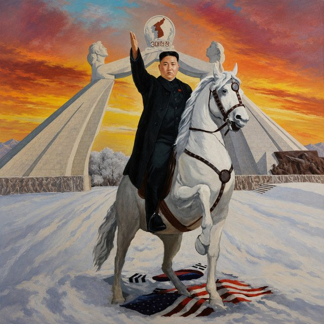
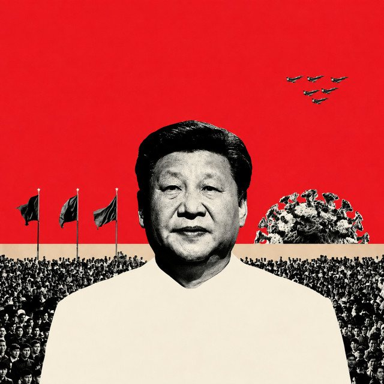

The Eclectic Polymath Podcast · Archive
#030 World Leaders: Kim Jong Un, The Iron Successor

About this episode
Kim Jong Un inherited one of the most closed political systems on earth, but his rule has never been just about inheritance. It has been about survival, fear, spectacle, and the careful maintenance of a dynasty built around absolute control.
This episode traces his rise after the death of Kim Jong Il, the purges that consolidated his authority, and the byungjin policy that tied nuclear weapons to economic development.
We look at the cult of personality, the opaque ruling elite, North Korea’s cycles of diplomacy and confrontation, and the role of military deterrence in protecting the Kim family’s grip on power.
Key points
- Kim Jong Un inherited one of the most closed political systems on earth, but his rule has never been just about inheritance.
- This episode traces his rise after the death of Kim Jong Il, the purges that consolidated his authority, and the byungjin policy that tied nuclear weapons to economic development.
- We look at the cult of personality, the opaque ruling elite, North Korea’s cycles of diplomacy and confrontation, and the role of military deterrence in protecting the Kim family’s grip on power.
More like this
#044: Mohammed bin Salman: The Architect of Modern Saudi ArabiaJune 6, 202632:42 #041: The 1979 Revolution and the Making of Modern IranJune 3, 202637:30#038: The Sports Cartel: Labor Law, Lockouts, and League EconomicsMay 31, 202653:57
#041: The 1979 Revolution and the Making of Modern IranJune 3, 202637:30#038: The Sports Cartel: Labor Law, Lockouts, and League EconomicsMay 31, 202653:57
#041: The 1979 Revolution and the Making of Modern IranJune 3, 202637:30#038: The Sports Cartel: Labor Law, Lockouts, and League EconomicsMay 31, 202653:57
#022 World Leaders: Xi Jinping and the Chinese DreamMay 25, 202651:57